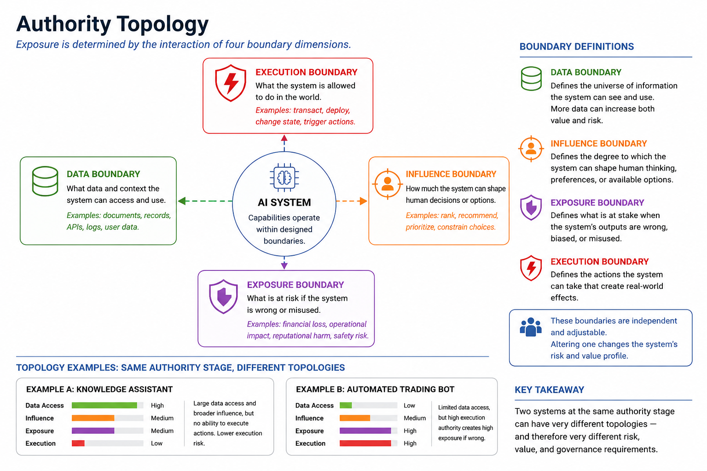

4. DESIGNING AUTHORITY TOPOLOGIES
Authority topology is the main way exposure is designed. Organisations usually define system capabilities, data sources, and workflows before deployment, but they rarely define authority with the same attention. SCOPE views authority as a design object. It can be structured, limited, expanded, and governed before a system is integrated into operational workflows.
Authority Topologies
SCOPE argues that organisational exposure comes from the authority given to an AI system. However, the exposure linked to any specific level of authority depends on how data sources, workflows, dependencies, and decision-making paths are set up within the system.
For example, consider two systems, A and B. Both have Recommend authority and similar capabilities for ranking options. System A offers inputs to a single reviewer, so its recommendations are easy to understand and can be overridden. In contrast, System B provides inputs to other workflows; its rankings are not as clear, and the organisation relies on these rankings for further decisions. It is clear that the organisation faces more exposure from System B because of the unclear rankings and reliance on them.
An authority topology is the structural arrangement of authority, visibility, and dependency within a system. It explains how information moves through a workflow, what remains visible to human operators, where decision-making authority exists, and how organisational outcomes depend on system behavior.
Different topologies create very different exposure profiles, even if the system capabilities are the same. The design question is not just what a system can do, but how to organize authority, visibility, and dependency to create a specific exposure profile.
The Four Design Boundaries
Authority topologies are defined by four types of boundaries that together determine how authority is shared between systems and human operators. These are design parameters; they are not fixed limits that are crossed once. Their placement affects the resulting exposure profile.

Figure 3: Authority TopologyData Boundary
Data boundaries define the information a system can access and process.
Expanding a data boundary means increasing the information available to an AI system. This does not necessarily create meaningful exposure on its own, but it does broaden the information base from which authority may later develop. The more a system can access information, the greater its potential influence on downstream decisions.
Influence Boundary
Influence boundaries define how much a system can shape human judgment.
Initial influence might be limited to informational suggestions. Later expansions could allow systems to rank alternatives, prioritize options, set defaults, or exert stronger influence over decision-making.
As the influence boundary expands, organisational dependence on system outputs generally increases. This changes the resulting exposure profile. While human operators can technically see the entire decision surface, their assessment of that surface may be more influenced by system outputs.
Exposure Boundary
Exposure boundaries define how much systems can shape the decision surface, meaning how they affect what is visible in the decision-making process.
Exposure increases when systems filter, prioritize, suppress, route, or determine what information becomes visible for human review. In these cases, organisational outcomes depend not only on human decisions but also on what the system decides to highlight.
The difference between influence and exposure boundaries is subtle but important because they change oversight in fundamentally different ways.
An influence boundary shapes judgment but preserves visibility. Operators can still review the complete decision surface and disagree with system outputs.
An exposure boundary, however, alters visibility itself. Once information is filtered or suppressed, human oversight relies on what the system decides deserves attention. Humans can no longer review what they cannot see. As visibility is managed, accountability gaps can arise from decisions that overlook hidden information.
For this reason, Constrain represents the first major structural exposure boundary within the Authority Progression Model.
Execution Boundary
Execution boundaries define the extent to which systems are permitted to directly alter operational state.
At this stage, authority goes beyond visibility and judgment into action. Systems may initiate transactions, modify records, trigger workflows, communicate externally, or perform other tasks without needing human approval.
The resulting exposure profile becomes more influenced by speed, scale, propagation, and reversibility. Human oversight may still exist, but it occurs after authority has already been exercised.
Exposure does not depend solely on authority. It comes from the interaction of these four boundary dimensions: what a system can see, what it can influence, what it can execute, and what is at stake when it makes a mistake.
Authority Expansion as Topology Change
Every authority change suggests a change in the placement of one or more of these design boundaries. A system may:
- gain access to additional information (a shift of the data boundary),
- exert greater influence over decision-making (changing its influence boundary) ,
- shape larger portions of the decision surface (altering the exposure boundary), or,
- execute new categories of operational actions (alter its execution boundary).
These changes are not just functional improvements; they change the relationship between the system and the organisation. They should be evaluated based on the exposure changes they introduce.
Designing Initial Scope
Since authority directly influences exposure, choosing the initial scope is one of the most important design decisions in the framework.
Traditional deployment approaches usually start with capability. If a system can perform a task, organisations naturally want to use that capability.
SCOPE takes a different approach. The initial scope should be based on desired exposure, not available capability.
The goal is not to maximize system capability but to achieve desired outcomes while keeping exposure as low as possible. Therefore, systems should start with the minimum authority needed to fulfil their intended purpose.
This principle highlights an important operational insight. Exposure introduced at deployment is often much harder to reverse once workflows, incentives, and organisational dependencies have formed around it.
Starting with a limited scope serves two purposes. First, it limits exposure while organisations learn how a system functions in a real operational environment. Second, it sets up a clear path for future growth. Additional authority should be something that needs to be earned, not automatically assumed.
A Topology Example
Consider a clinical team that manages patient referrals in an outpatient setting.
At Assist, an AI system extracts key clinical indicators from referral documents and flags any missing information. Every referral goes to a clinician. The structure allows for complete visibility, and decision-making remains entirely with human operators.
At Recommend, the system classifies urgency levels and suggests appointment times. Authority spreads across the influence boundary, but visibility stays the same. Clinicians continue to review all referrals, even if their prioritization starts to reflect the system's suggestions more.
At Constrain, the system automatically routes low-urgency referrals to a general queue and shows only high-urgency cases for immediate clinical review. Authority extends across the exposure boundary, meaning the clinical team does not see every referral during the initial review. organisational results depend on the system's ability to classify urgency correctly. Errors lead to recommendations that are not just mistaken; they result in cases that might never be reviewed with the right priority.
At Act, the system schedules appointments and sends confirmation communications without needing clinician approval. Authority crosses into execution and becomes part of the operational workflow. Errors can affect patient schedules, clinical capacity, and communication records before any human has a chance to review them.
The clinical capability of the underlying system might be the same across all four stages. However, the structure, and thus the exposure profile, differs.
Topology Design as Exposure Design
Topology design is the process of making exposure clear before authority is granted. By purposely arranging authority, visibility, and dependency relationships before deployment, organisations can understand what they are accepting and manage the conditions under which it changes.
A topology outlines what the organisation is risking and where. This definition makes expansion governable.